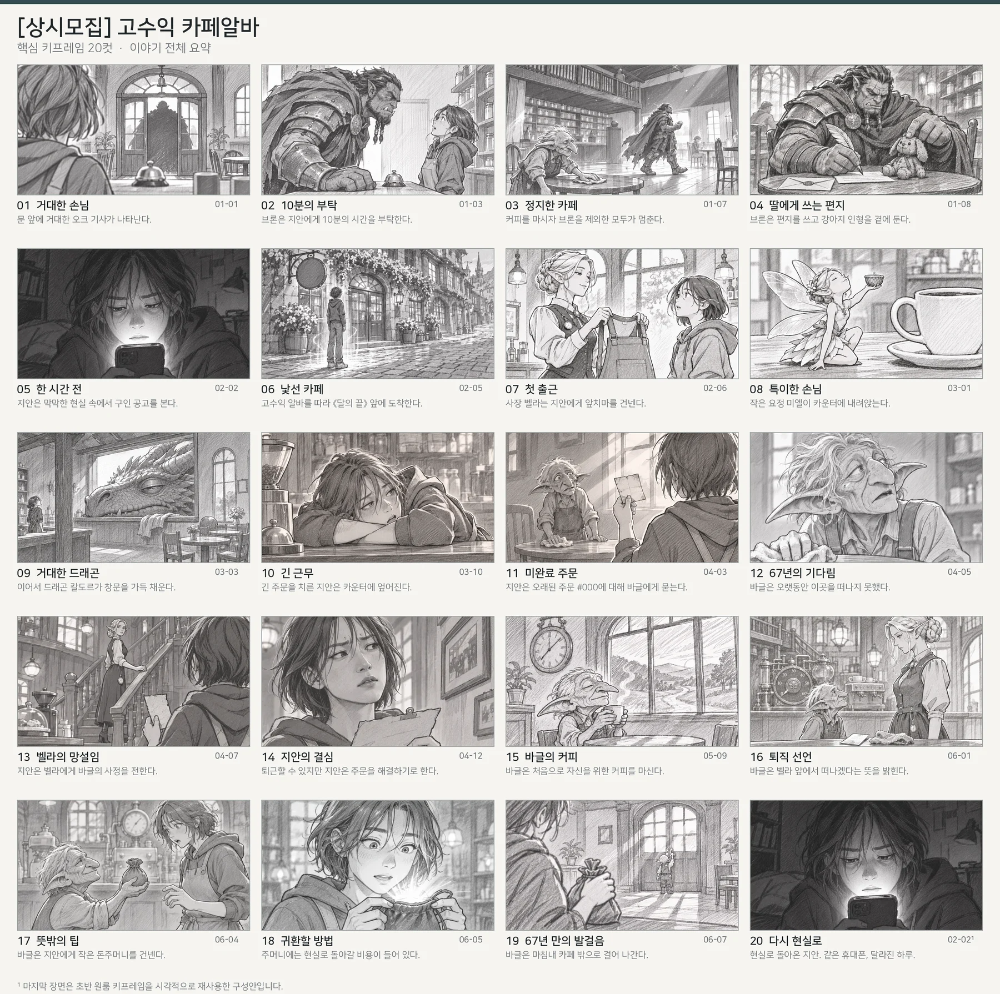
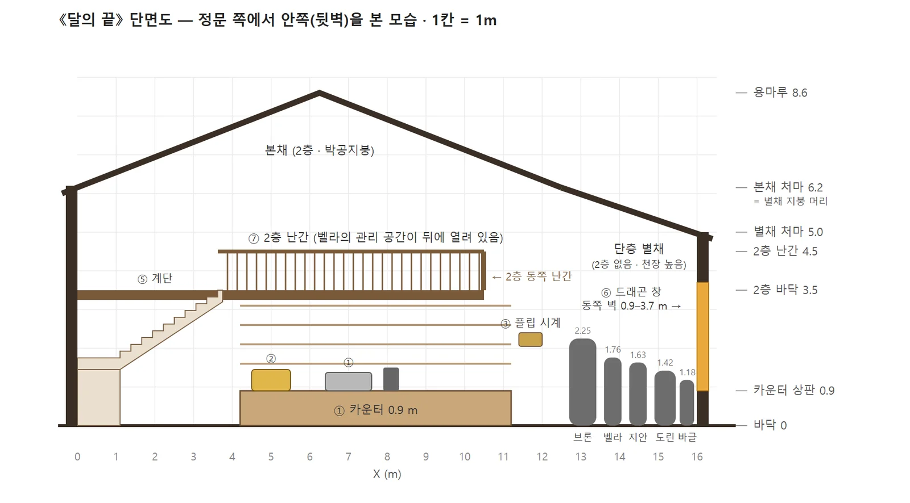
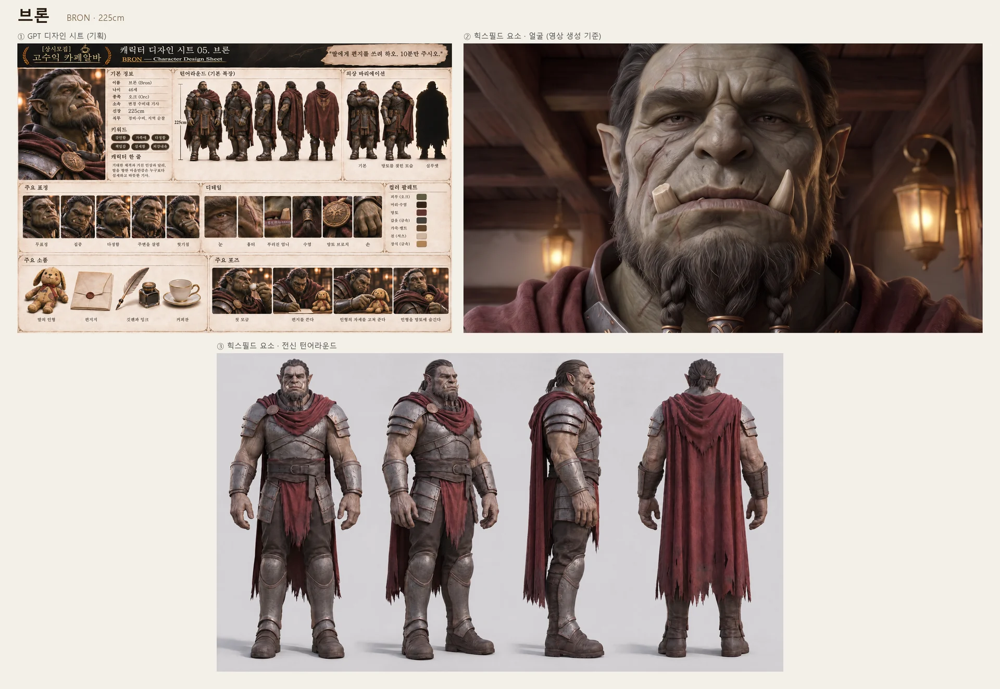
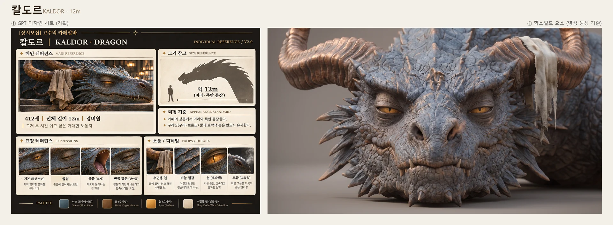
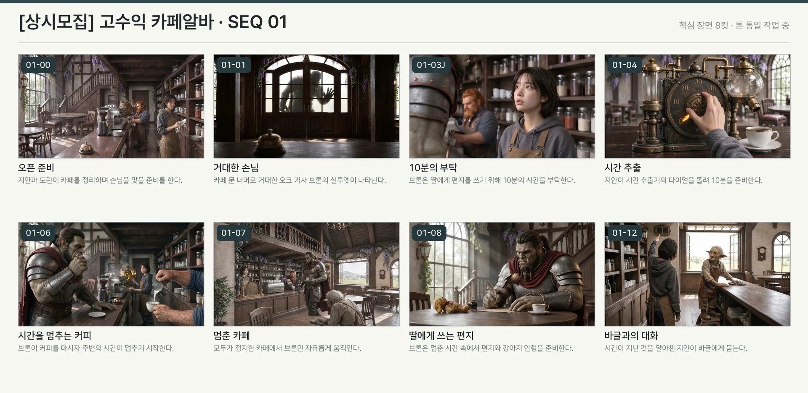
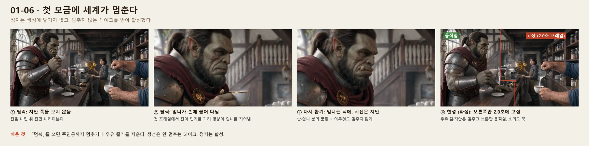

[상시모집] 고수익 카페알바
AI 단편 애니메이션 프리비즈 · SEQ 01 진행 중
프로젝트 개요Overview
월세가 밀린 지안은 ‘고수익 카페알바’ 공고 하나만 보고 이세계 카페 《달의 끝》에 들어갑니다. 손님에게 시간을 파는 카페인데, 손님이 사 간 10분만큼 직원의 퇴근이 늦어집니다.
이야기 전체는 20장면으로 정리해 두었고, 지금은 첫 시퀀스(SEQ 01)를 영상으로 만들고 있습니다. 오크 기사 브론이 딸에게 편지를 쓸 10분을 사러 오고, 커피 한 모금에 세계가 멈췄다가 다시 흐르면 지안의 퇴근 시계가 18:00에서 18:10으로 넘어가 있는 데까지입니다.
담당 작업Role
이야기와 콘티를 쓰고, 카페 공간과 카메라 위치를 설계하고, 캐릭터와 장면을 생성해 편집했습니다. 음악은 분위기와 악기를 정해서 Suno로 만들었습니다.
- ChatGPT
- Higgsfield
- Nano Banana Pro
- GPT Image 2.6
- Seedance 2.5
- Suno
- Premiere Pro
- Claude Code
제작 과정Process
장면을 만들기 전에 이야기, 공간, 캐릭터부터 정해 두었습니다. 생성할 때마다 기댈 기준이 있어야 컷끼리 어긋나지 않기 때문입니다.
01.이야기를 20장면으로
먼저 이야기 전체를 20장면으로 나눠 연필 콘티로 정리했습니다. 시퀀스별 컷은 이 20장면을 바탕으로 나눴습니다.

02.카페 도면부터 그리기
카운터와 계단, 용이 머리를 들이미는 큰 창이 어디에 얼마나 높이 있는지는 1층과 2층 평면도, 단면도로 먼저 정했습니다. 인물 키도 같은 축척으로 그려 두었습니다. 오크 기사는 225cm, 고블린은 118cm라서 이 차이가 컷마다 달라지면 바로 티가 납니다.
도면 좌표를 그대로 옮겨 3D 블록아웃을 만들고, 여기서 카메라 위치와 렌즈를 정했습니다. 장면은 그 구도에 맞춰 생성했습니다.




03.디자인 시트를 영상용으로 다시 만들기
캐릭터마다 ChatGPT로 디자인 시트(성격, 표정, 소품, 포즈)를 먼저 만들었습니다. 시트는 일러스트 톤이라 영상에 바로 쓰기는 어려워서, 실사 톤 얼굴과 전신 턴어라운드를 새로 만들어 Higgsfield 요소로 등록했습니다. 장면을 생성할 때는 늘 이 요소를 같이 넣어서 컷이 바뀌어도 같은 얼굴이 나오게 했습니다.
작업하면서 바뀐 것도 있습니다. 브론의 갑옷은 시트에서는 어두운 가죽이었는데, 영상에서는 회색 강철로 정했습니다. 부러진 오른쪽 엄니는 컷마다 제대로 나왔는지 따로 확인했습니다.





04.SEQ 01 스토리보드
조용한 한낮의 카페에 거대한 오크 기사가 들어와 “딸에게 편지를 쓸 10분”을 부탁합니다. 커피 한 모금에 세계가 멈추고, 브론은 그 10분 동안 편지를 씁니다. 시간이 다시 흐르자, 지안의 퇴근 시계는 18:00에서 18:10이 되어 있습니다.

문제 해결Problem Solving
원하는 대로 안 나오는 컷이 많았습니다. 처음에는 프롬프트를 더 길게 써 봤는데 잘 바뀌지 않아서, 같은 문제로 두 번 실패하면 프롬프트를 붙잡지 말고 방법을 바꾸기로 했습니다. 그렇게 푼 컷 세 개입니다.
01.멈춘 카페를 브론 혼자 걷는다
시간이 멈춘 카페를 브론만 걸어가는 컷입니다. 그냥 생성하면 배경이 계속 조금씩 움직였습니다. 그래서 Premiere Pro에서 브론을 지운 빈 배경, 걷는 브론, 브론 앞을 가리는 의자와 바글을 세 레이어로 쌓아 합성했고, 마스크가 놓친 부분은 프레임마다 손으로 채웠습니다.
합성본에는 이음매가 남아서, 이 영상을 동작 참고로 넣고 한 번 더 생성했습니다. 배경이 이미 멈춰 있는 영상을 참고로 주니까 결과에서도 배경이 멈췄습니다.

02.첫 모금에 세계가 멈춘다
프롬프트에 “멈춰”를 넣으면 브론까지 같이 굳어 버리거나, 따르던 우유 줄기가 사라졌습니다. 그래서 멈추라는 말은 빼고 평범하게 움직이는 테이크를 받았습니다. 그다음 한 프레임을 잘라 화면 오른쪽에 덮어 고정하고, 브론만 움직이게 합성했습니다.
잔을 내릴 때 엄니가 손에 붙어 같이 내려오는 테이크도 있었습니다. 이건 첫 프레임에서 손과 얼굴 사이를 띄워 두라고 지시해서 다시 뽑았습니다.

03.시간 추출기 다이얼
첫 프레임에서 손이 다이얼을 가리고 있었더니, 손이 비켜난 자리에 원래 없는 숫자 ‘5’가 나타났습니다. 가려진 부분을 모르니 지어낸 것이라, 추출기를 정면에서 그린 그림을 같이 넣어 줬습니다. 그러자 ‘60’이 제대로 나왔습니다.

편집과 음악Edit & Music
티저 음악은 Suno로 만든 왈츠 「Absurde Walzer」입니다. 엉뚱한데 어딘가 씁쓸한 느낌을 원해서 피치카토 현악, 클라리넷, 시계 소리 같은 타악기를 넣었습니다.
노래가 중간에 툭 끊기지 않게 곡의 마지막 30초를 썼습니다. 곡 중간에 잠깐 쉬는 부분에 세계가 멈추는 컷을 놓고, 마지막 음에 지안의 퇴근 시계가 18:10으로 넘어가게 맞췄습니다. 나머지 컷도 박자에 맞춰 프레임 단위로 잘랐습니다.
AI 활용 범위AI Usage
AI로 만든 것
캐릭터 디자인 시트와 연필 콘티 이미지는 ChatGPT로 만들었습니다. 장면 이미지는 Higgsfield에서 Nano Banana Pro와 GPT Image 2.6으로, 영상은 Seedance 2.5로, 음악은 Suno로 생성했습니다. Claude Code는 프롬프트와 작업 기록 정리, 도면과 블록아웃 제작, ffmpeg 합성과 편집 보조에 썼습니다.
직접 한 것
이야기와 컷 구성, 카페 공간과 카메라 위치, 캐릭터 디자인 방향은 제가 정했습니다. 생성된 결과 중에서 쓸 것을 고르고, 틀린 부분을 어떻게 고칠지도 제가 판단했습니다. 01-07의 프리미어 레이어 합성과 마스크 보정은 직접 작업했습니다.
회고Retrospective
결과가 틀리게 나올 때는 프롬프트를 고치는 것보다 넣는 그림을 바꾸는 쪽이 훨씬 빨랐습니다. 칼도르 얼굴을 비스듬한 정면으로 두 번 요청했는데 두 번 다 옆모습이 나왔습니다. 알고 보니 참고로 넣은 그림이 전부 옆모습이었고, 그 그림을 빼자 한 번에 정면이 나왔습니다. 도면과 캐릭터 기준을 먼저 만들어 둔 것도 도움이 됐습니다. 컷을 하나씩 따로 생성했는데도 같은 카페, 같은 인물로 이어졌습니다.
아쉬운 점도 있습니다. 지금 영상은 720p로 생성한 걸 1080p로 키운 것이고, 컷마다 색감이 조금씩 다릅니다. 다음에는 SEQ 01 색을 맞추고 대사와 효과음까지 붙여 완성한 뒤 SEQ 02로 넘어갈 생각입니다.